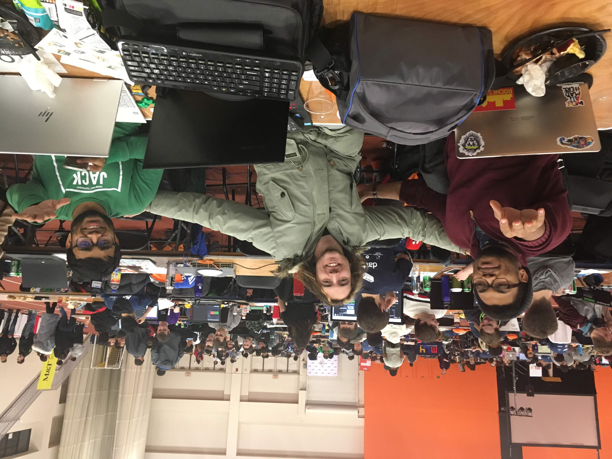
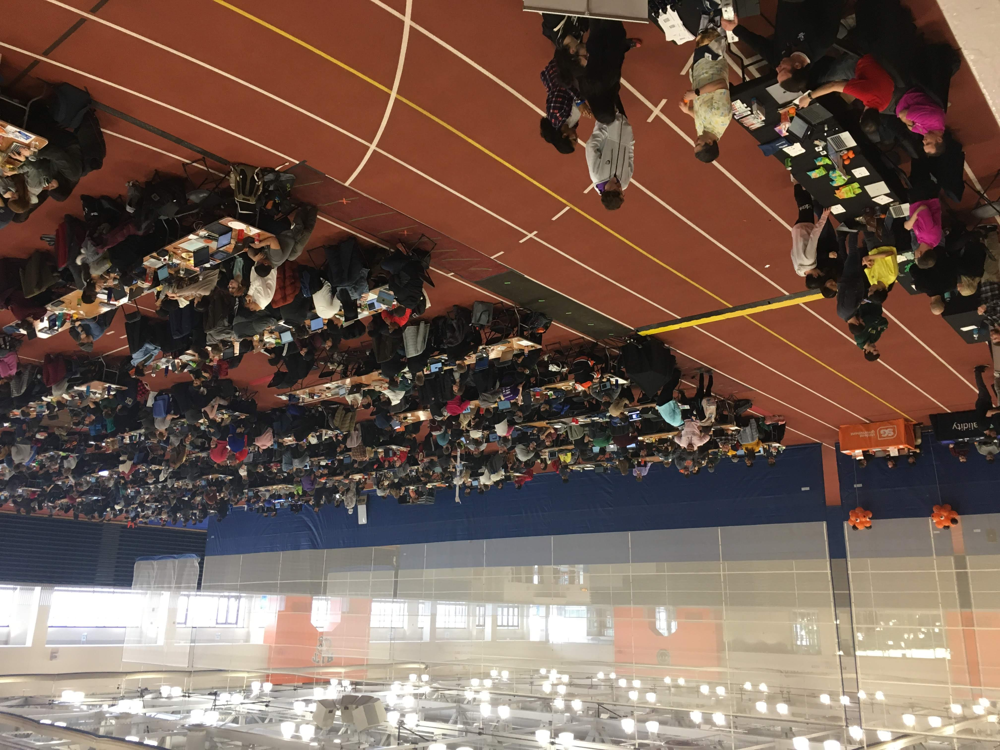
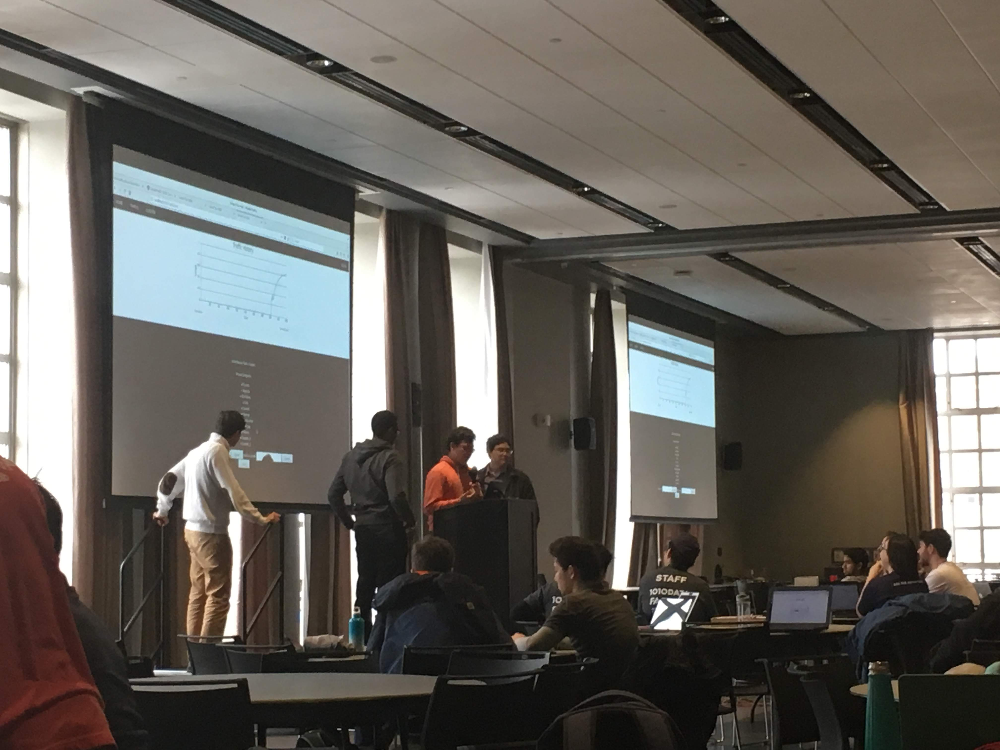
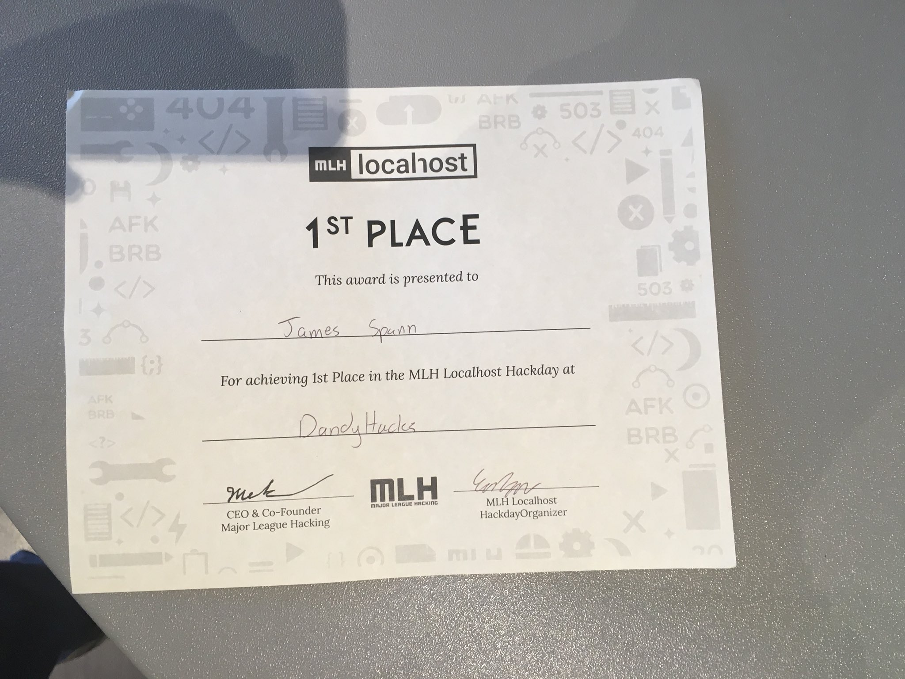

PennApps XXIII - September 2022
Made a team with new friends from Flordia and put my Flask skills to the test with a scheduling app! We demoed our site!
NYC Human Performance Hackathon - June 2022
Was invited to a hackathon in NYC and co-formed the "Tomato Team" to build a stress reducing app! Got to work with Chrome extensions, Flask servers, and re-learn swift for iOS programming. This hackathon was geared to everyone, not just college students, and I got to meet a lot of people from all over NYC!
BrickHack 6 - February 2020


Dandyhacks - February 2018


Went to University of Rochester to build a decentralized data sharing tool! I demoed and won first place!
Hack RPI - November 2016
Headed back to RPI for my 3rd hackathon! Brought my friends Richard and Hank, and met an HS student who joined our team! I made an artistic representation of soylent for the drawing contest.
BigRed//Hacks - September 2016
Joined Dan and other RIT friends to a hackathon at Cornell! Built a website for searching for music based on tastes with the Spotify API. Much Soylent was had.
Hack RPI - November 2015
My friend Fernando brought me to my first ever hackathon. I drank soylent, learned about steganography and figured out what a "hackathon" actually is.